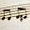
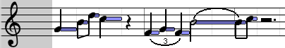

Fichier > Nouveau Crée une nouvelle chanson. Celle-ci apparaît comme un nouvel onglet dans la barre qui montre les séquences actuellement ouvertes (comme les onglets d'un navigateur web). Vous pouvez ensuite vous suffit de cliquer sur l'onglet de correspondant pour passer à cette chanson.
Fichier> information sur la séquence Les fichiers Midi permettent à leur auteur de spécifier des informations comme le titre et les informations sur le droit d'auteur.
Édition> Coller au curseur Colle les notes sélectionnées près du curseur de la souris (utiliser cette action à partir du menu a peu d'utilité bien entendu, vous devez utiliser le raccourci clavier: CMD / CTRL + MAJ + V).
Édition> Sélectionner avec critères ... Sélectionnez des notes en fonction de critères. La plupart de ces critères sont basés sur une note actuellement sélectionnée. Par exemple, si vous voulez sélectionner toutes les notes « sol », il vous suffit de sélectionner une des notes « sol », puis sélectionnez cette option dans le menu, cochez la case "sélectionner toutes les notes qui ont la même hauteur", cliquez sur OK, et c'est fait! Vous pouvez également utiliser cette fonction pour sélectionner toutes les notes dans une intervalle de mesures (par exemple, si vous souhaitez sélectionner toutes les notes dans les mesures 65 à 78)
Édition > Aligner les notes à la grille Aria utilise une "grille magnétique" pour s'assurer que les notes ont un emplacement et une durée précis, correspondant à celles de la théorie musicale. Si vous vous retrouvez avec des notes qui semblent avoir des longueurs ou emplacements inhabituels, sélectionnez ces notes, sélectionnez une taille de la grille appropriée (voir ci-dessous dans la documentation relative aux pistes) et sélectionnez cette option.
Édition > Retirer les notes superposées Si vous avez copié une série de notes, les avez collé en plein par-dessus des notes originales, et accidentellement désélectionné avant de les déplacer - toutes les notes sont maintenant doubles! Heureusement, vous pouvez simplement sélectionner les notes et utiliser cette fonctionnalité. De façon plus générale cela peut servir dès que des notes se chevauchent.
Piste > Propriétés Permet de définir les propriétés de la piste en cours, notamment le volume par défaut (1) à utiliser pour de nouvelles notes, (2) l'arrière-plan (Affiche les notes d'autres pistes en arrière-plan, ne fonctionne actuellement qu'avec l'éditeur Piano).
Options > Suivre la lecture Si cette option est cochée, lorsque vous appuyez sur « jouer », la barre de défilement horizontale se déplacera automatiquement pour que la mesure présentement en train de jouer soit en tout temps visible.
Options > Jouer durant l'édition Lorsque vous modifiez une chanson, Aria vous propose de jouer les notes que vous manipulez, sans que vous deviez appuyer sur le bouton « jouer ». Vous pouvez dans ce menu décider quand les notes doivent être jouées durant l'édition.
Options > Gestion des canaux Midi considère pistes et canaux comme deux entités séparées. Dans les spécifications midi, les pistes sont un regroupement de notes, tandis que les canaux sont là où les pistes jouent réellement les notes. Ce menu vous permet de choisir si vous souhaitez manuellement être en mesure de préciser les canaux ou si vous préférez que Aria gère ce concept de façon transparente. Lorsque cette option est activée, vous verrez un nouveau contrôle apparaître dans l'entête de la piste (voir ci-dessous).

Les 2 premiers éléments sont les boutons « jouer » et « arrêt », qui vous permettent de jouer la chanson.
Tempo vous permet de régler le tempo (vitesse) de la chanson en battements par minutes.
Durée vous permet de choisir la quantité totale de mesures dans votre chanson. Si vous manquez d'espace dans les 12 mesures par défaut, il suffit d'en ajouter en cliquant sur les flèches ou en tapant un nouveau nombre et en appuyant sur entrer, si nécessaire.
Mesure vous permet de choisir les nombres indicateurs de mesure (soit globalement, si vous utilisez une durée de mesure uniforme tout au long de la chanson, soit pour la mesure actuellement sélectionnée, si vous utilisez plusieurs durées de mesure en mode mesure de gestion avancée). Par défaut, 4/4 est utilisé.
Début vous permet de choisir la mesure où la chanson commence. Par exemple, si vous faites une chanson longue et travaillez présentement sur la mesure 100, vous ne voudrez sans doute pas commencer à jouer à la mesure 1 à chaque fois que vous changez une note et que vous voulez entendre le résultat - vous pouvez simplement changer votre chanson pour commencer, disons, à la mesure 95.
Zoom vous permet de choisir la taille des notes apparaissant dans les pistes. Il est utile de les rendre plus grandes si, par exemple, vous travaillez avec des notes très courtes.
Outils vous permet de basculer entre deux modes d'édition différents, le premier est le mode "classique" édition où les notes sont ajoutés en les "dessinant" (à l'aide de la souris par glisser-déposer; voir plus bas). Le deuxième outil vous permettra d'ajouter des notes de la longueur choisie directement en cliquant où vous désirez les placer.

Cette barre indique le numéro de chaque mesure.
Si vous faites un clic droit près de la ligne entre deux mesures, un menu pop-up apparaîtra, vous permettant d'insérer des mesures vides entre les deux.
Vous
pouvez également cliquer sur une mesure pour la sélectionner. Cela
permet de sélectionner toutes les notes contenues dans cette mesure.
Vous pouvez faire la même chose pour les multiples mesures en
faisant glisser la souris. Vous pouvez les désélectionner en
effectuant une action qui désélectionne les notes, par exemple en
cliquant sur un espace vide dans une piste.

Une fois que vous avez sélectionné une ou plusieurs mesures, vous pouvez faire un clic-droit sur celles-ci. Cela affichera une pop-up vous permettant de supprimer complètement ces mesures.

Pendant que le morceau est en lecture, la partie de la chanson qui est présentement jouée peut ne pas être visible parce que la barre de défilement horizontale est placée pour montrer une autre portion de la chanson. Dans ce cas, une flèche rouge apparait à une extrémité de la barre, pour identifier où en est la lecture par rapport aux mesures présentement visibles. En cliquant sur la flèche, vous serez amenés directement à la partie de la chanson en cours de lecture.

Si vous cochez gestion étendue des mesures dans le menu Options, la barre de mesure deviendra plus large et vous pourrez alors changer les chiffres indicateurs de mesure à tout moment de la chanson. Pour ajouter un changement de durée des mesures, il suffit de cliquer dans le bas de la barre des mesures. Un nouveau changement de durée de mesure apparaîtra. Pour sélectionner un changement, il suffit de cliquer dessus. Il deviendra plus lumineux et plus grand (voir la signature 3/4 dans l'image ci-dessus) En cliquant sur le carré rouge à côté d'un changement de durée de mesure, un pop-up permettant de modifier sa valeur apparaîtra. Pour supprimer un changement de durée de mesure, faites un clic droit dessus et sélectionnez Supprimer ce changement de mesure.
Lorsque vous créez un nouveau morceau, vous obtenez une piste en vue clavier. Vous pouvez ajouter et supprimer des pistes avec le menu « Pistes ».

Réduire vous permet de minimiser (ou de restaurer) la piste. Vous pouvez réduire une piste lorsque vous n'en avez pas besoin pour l'instant, de sorte qu'il n'occupe pas inutilement d'espace à l'écran. Quand une piste est minimisée, l'éditeur est caché et seulement l'en-tête est visible (ce que vous voyez sur la capture d'écran).
 volume de la piste
permer d'ajuster le volume de la piste entière, par exemple pour
rendre une piste plus douce que les autres.
volume de la piste
permer d'ajuster le volume de la piste entière, par exemple pour
rendre une piste plus douce que les autres.
Sourdine vous permet de couper le son d'une piste. Cliquez sur le haut-parleur: un X apparaît dessus. La prochaine fois que vous jouerez la séquence, cette piste ne jouera rien. Cliquez à nouveau pour la réactiver.
Solo une piste marquée solo sera la seule piste qui sera entendu lorsque la séquence jouera. Activer solo sur une piste est équivalent à mettre toutes les autres pistes en sourdine. Cliquer de nouveau pour enlever.
 Maximiser
/ Ranger Lorsque
vous n'aurez certainement pas besoin d'une piste pendant un certain
temps, vous pouvez cliquer sur le deuxième bouton (flèche pointant
vers le bas). Cette piste sera complètement retirée de la zone de
piste, et sera rangée vers le dock
au bas de l'écran. Lorsque vous voulez revenir à la piste, cliquez
sur son nom dans le dock
et elle sera ramenée.
Si vous souhaitez maximiser une piste,
cliquez sur l'icône de gauche. La piste prendra alors tout l'écran.
Dans cet état, vous pouvez passer d'une piste à l'autre en
utilisant la barre en bas.
Maximiser
/ Ranger Lorsque
vous n'aurez certainement pas besoin d'une piste pendant un certain
temps, vous pouvez cliquer sur le deuxième bouton (flèche pointant
vers le bas). Cette piste sera complètement retirée de la zone de
piste, et sera rangée vers le dock
au bas de l'écran. Lorsque vous voulez revenir à la piste, cliquez
sur son nom dans le dock
et elle sera ramenée.
Si vous souhaitez maximiser une piste,
cliquez sur l'icône de gauche. La piste prendra alors tout l'écran.
Dans cet état, vous pouvez passer d'une piste à l'autre en
utilisant la barre en bas.
La zone de texte avec "Sans Titre" est le nom de la piste. Cliquez sur ce champ et entrez le nom que vous désirez donner à la piste.
La zone de liste déroulante qui contient des notes est la taille de la grille magnétique. La grille magnétique vous permet de sélectionner la durée des notes. Dans cette boîte de combo, vous pouvez choisir la précision de la plus petite note que vous voulez utiliser, simplement en cliquant dessus. Vous pouvez également cliquer sur l'icône correspondante pour activer ou désactiver le mode triolet. Cliquez sur les flèches de la liste déroulante pour plus de choix.



 Éditeur
Ces boutons indiquent éditeur sélectionné (le type de vue, la
façon dont les notes sont affichées et éditées). Vous pouvez
cliquer sur le piano pour aller en mode piano, vous pouvez cliquer
sur la guitare pour obtenir une vue tablature, etc (Voir ci-dessous
éditeurs pour plus d'infos).
Éditeur
Ces boutons indiquent éditeur sélectionné (le type de vue, la
façon dont les notes sont affichées et éditées). Vous pouvez
cliquer sur le piano pour aller en mode piano, vous pouvez cliquer
sur la guitare pour obtenir une vue tablature, etc (Voir ci-dessous
éditeurs pour plus d'infos).
Le dernier champ à la droite de la tête de la piste est l'instrument utilisé pour jouer les notes. Cliquez sur ce contrôle et vous serez en mesure de choisir un instrument parmi les 128 instruments standard de MIDI, placés dans différentes catégories.
 Canal
Ce contrôle ne s'affiche que si vous avez activé la gestion
manuelle des canaux (voir le menu Options ci-dessus). Il vous permet
de spécifier dans quel canal cette piste jouera. (Dans les
spécifications midi, il y a 16 canaux, de 0 à 15, où le canal 9
correspond aux percussions).
Canal
Ce contrôle ne s'affiche que si vous avez activé la gestion
manuelle des canaux (voir le menu Options ci-dessus). Il vous permet
de spécifier dans quel canal cette piste jouera. (Dans les
spécifications midi, il y a 16 canaux, de 0 à 15, où le canal 9
correspond aux percussions).
Vous pouvez redimensionner une piste en cliquant sur et faisant glisser la bordure inférieure de la piste.
Vous pouvez réorganiser les pistes en saisissant la bordure supérieure d'une piste, juste au-dessus de son en-tête. Vous verrez alors une liste de toutes les pistes, où vous pourrez placer la piste à son nouvel emplacement en glissant la souris.
Éditeur de Piano

Il s'agit de la vue par défaut. Il montre un « rouleau de notes » simple où les diverses hauteurs sont représentées à la verticale. Pour ajouter une note, il suffit de maintenir le bouton de la souris enfoncé et faites glisser horizontalement le curseur sur la piste. Lorsque vous relâchez la souris, une note sera placée là où vous avez cliqué, avec une durée correspondant au glissement du curseur. Essayez-le, c'est facile! Il y a un preview pour vous montrer où la note sera lorsque vous relâchez la souris. Pour sélectionner une seule note, vous pouvez simplement cliquer dessus. Les notes sélectionnées apparaissent en couleur dans les tons de jaune / vert. Pour sélectionner plusieurs notes, vous pouvez simplement faire glisser la souris sur la piste. Dans un premier temps, il pourrait sembler que Aria veut ajouter une nouvelle note, mais continuez tout de même; lorsque vous aurez suffisamment déplacé la souris verticalement, le logiciel comprendra que vous voulez sélectionner et affichera un rectangle de sélection rectangulaire Toutes les notes dans le rectangle lorsque vous relâchez la souris seront sélectionnées.
Si vous avez des notes déjà sélectionnés, et que vous voulez sélectionner davantage de notes, maintenez la touche MAJ enfoncée tout en sélectionnant des notes additionnelles. Si vous avez des notes déjà sélectionnés, mais que vous voulez désélectionner spécifiquement certaines d'entre elles, maintenez la touche Alt et cliquez sur celles-ci.
Vous pouvez jouer les notes sélectionnées en appuyant sur la barre d'espace. Pour modifier le volume d'une note, faites un clic droit sur celle-ci. Une fenêtre pop-up apparaîtra. Vous pouvez ensuite faire glisser le curseur ou d'entrer manuellement une valeur et appuyez sur Entrée. Les volumes dans le standard Midi varient de 0 (inaudible) à 127 (le plus fort). Si vous faites un clic droit sur un tas de notes sélectionnées, il réglera le volume pour toutes ces notes. Si vous souhaitez annuler l'entrée d'un nouveau volume, appuyez sur Echap. De plus, la couleur d'une note montre son volume. Les notes fortes sont affichées plus sombres que celles douces.
Pour déplacer une note, il vous suffit de cliquer dessus, maintenez le bouton de la souris enfoncé et faites-la glisser vers son nouvel emplacement. Vous pouvez également faire glisser un ensemble de notes sélectionnées de la même manière, en les faisant glisser.
Alternativement, vous pouvez déplacer les notes sélectionnées en appuyant sur les flèches du clavier. Pour modifier la durée d'une (ou plusieurs) note(s), sélectionnez, maintenez enfoncé la touche commande ou contrôle (selon votre système), et appuyez sur la touche flèche gauche ou droite de votre clavier. Chaque fois que vous appuyez sur une touche fléchée, la note sera redimensionnée dans le sens indiqué par la flèche. (Essayez-le! C'est plus clair quand vous le verrez)
Vous pouvez supprimer les notes sélectionnées en appuyant sur la touche supprimer ou backspace de votre clavier.
Vous pouvez déplacer les notes de une octave vers le haut ou vers le bas en utilisant shift + touches haut / bas, et déplacer à la mesure suivante ou précédente avec les touches shift + gauche / droite. Vous pouvez également dupliquer les notes en les faisant glisser tout en maintenant la touche Ctrl (ou la touche commande pour les utilisateurs de OSX).
Éditeur de Guitare

Cet éditeur vous permet d'éditer votre chanson comme une tablature de guitare. (Si vous ne savez pas ce que tablature est, ou ne jouez pas de guitare, vous ne serez probablement pas être intéressé par cet éditeur) Vous pouvez vous référer à la section concernant l'éditeur de piano, puisque presque toutes les fonctionnalités de l'éditeur de Piano s'appliquent également dans l'éditeur de Guitare.
Dans l'éditeur de guitare, lorsque vous déplacez une note vers le haut ou vers le bas sur les cordes, elle conservera le même numéro de frette, et sa hauteur s'adaptera à la corde vers laquelle vous la déplacez. Si vous voulez déplacer une note verticalement (d'une corde à l'autre) mais tout en conservant la même hauteur (par exemple, 10 sur une corde a la même hauteur que 5 sur la corde inférieure) Aria peut le faire pour vous, il suffit de sélectionner la note, maintenir la touche MAJ enfoncée, et appuyer sur la touche flèche vers le haut ou vers le bas. Rien ne se passera si vous essayez de déplacer une note vers une corde où ce sont ne peut pas être joué.
Si vous souhaitez modifier le numéro de frette, il suffit de sélectionner une note et d'appuyer sur la touche appropriée sur le clavier, que ce soit dans le pavé numérique à droite du clavier, ou dans les touches numériques du haut du clavier. Pour les numéros supérieurs à 9, vous pouvez maintenir la touche Maj enfoncée et appuyer sur un certain nombre. Par exemple, Maj + 5 donnera 15, Maj + 7 donnera 17. Vous pouvez également utiliser les raccourcis clavier de commande + haut (ou Ctrl + haut) et commande + vers le bas (ou Ctrl + bas) pour augmenter ou diminuer le numéro de frette d'une note.
Vous pouvez également modifier la façon d'accorder la guitare en cliquant sur les noms de cordes dans la partie gauche de l'éditeur et sélectionnant un nouveau réglage.
Si quelques notes, notamment dans une chanson importée depuis un fichier MIDI ou qui ont été ajoutés dans un autre éditeur que l'éditeur de guitare, ne semblent pas être mises sur les bonnes cordes (par exemple plusieurs notes sont jouées simultanément sur la même corde, ou un accord n'est pas placé sur des cordes consécutives, etc), vous pouvez également choisir "Réorganiser les notes sélectionnées" dans le menu qui apparait lorsque vous cliquez sur la partie gauche de l'éditeur (la partie avec des noms de cordes). Aria va tenter de réorganiser les notes d'une manière plus agréable à jouer. (Présentement, cette fonctionnalité n'est pas parfait et ne donne pas toujours des résultats optimaux, mais dans l'ensemble aide tout de même à améliorer la tablature)

Vous permet d'éditer la musique avec une notation plus proche de la notation musicale classique. Cet éditeur fonctionne de manière similaire à l'éditeur de piano, donc si vous n'êtes pas habitué à travailler avec l'éditeur de clavier vous pouvez vous référer à la section du manuel le décrivant. Lorsque vous déplacez une note vers le haut ou vers le bas, par défaut elle se déplacera à la ligne suivante de la partition. Si vous voulez plutôt modifier la valeur d'une note par demi-tons (par exemple en vue d'introduire des altérations) il suffit de maintenir enfoncée la touche Maj tout en appuyant sur les touches fléchéeds haut / bas du clavier. Vous pouvez également utiliser les boutons bémol / dièse / bécarre qui se trouvent dans l'en-tête de la piste:

Si vous cliquez sur la partie gauche de l'éditeur, où vous
pouvez voir l'armature (les clés de sol et de fa), vous verrez un
menu. Ce menu vous permettra de:
passer à une autre tonalité.
choisir le type de vue: musical, linéaire (ou les deux). La vue musicale affichera les notes d'une manière « classique ». La vue linéaire affiche plutôt des barres horizontales un peu comme éditeur de piano, afin de mieux visualiser la durée des notes. Par défaut, les deux modes sont combinés. Vous pouvez activer ou désactiver chacun de façon indépendante. En règle générale, le mode linéaire facilite l'édition, alors que le mode musical facilite la lecture de la partition.
choisir les clés(s) à utiliser (sol et/ou fa)
Augmenter ou diminuer la partition d'une octave
Éditeur de percussions
Permet d'éditer la batterie. Lorsque vous êtes dans ce mode, l'ensemble des instruments proposés est différent. Midi ne permet qu'un seul canal de batterie par chanson. Aria permet d'utiliser plus d'une piste de batterie la même chanson, toutefois en raison de cette limite du standard MIDI un seul type de batterie est permis. (Par exemple, vous ne pouvez pas avoir une batterie « room kit » dans une piste et une batterie « orchestra kit » dans une autre).
Contrairement aux autres éditeurs, les notes dans cet éditeur sont instantanées et n'ont pas de durée. Lorsque vous ajoutez une note dans cet éditeur, il n'est donc pas nécessaire de faire glisser la souris, il suffit de cliquer où vous voulez ajouter une note de percussion. Les types de percussion sont organisés verticalement en sections - vous pouvez masquer une section que vous n'utilisez pas en cliquant sur le petit triangle blanc à côté de son nom. Juste au-dessus du nom du premier instrument percussif est un triangle noir. En cliquant sur ce triangle, tous les instruments percussifs non utilisés seront cachés.
Éditeur de contrôleurs
Cet éditeur est différent d'autres éditeurs, car il ne vous permet pas de modifier les notes elles-mêmes, mais les détails de la façon dont elles sont jouées.
Par exemple, Pan vous permettra de choisir le côté où la note doit jouer dans des haut-parleurs stéréo, Reverb permet d'ajouter de l'écho à l'instrument, Volume permet de changer le volume général à volonté. L'éditeur de contrôleur apparaît comme une graphique avec une valeur maximale vers le haut et une valeur minimale en bas. Vous pouvez tout d'abord ajouter les changements brusques d'un simple clic, la position horizontale étant le moment où ce changement se produit et la position verticale étant la force de l'effet à appliquer (voir les noms en haut et en bas de l'éditeur pour savoir ce que signifie le paramètre vertical). Si vous ne voulez pas un changement soudain, mais plutôt un glissement progressif, vous pouvez maintenir enfoncée la souris et faire glisser en diagonale. Cela va créer une ligne qui suit le curseur que vous pouvez utiliser pour créer des changements progressifs.
Vous pouvez également, avec un clic-droit n'importe où dans l'éditeur, entrer une valeur précise.
Vous pouvez sélectionner dans cet éditeur en appuyant sur la touche shift de votre clavier et en faisant glisser le curseur. Vous pouvez ensuite supprimer la partie sélectionnée en appuyant sur la touche backspace ou supprimerde votre clavier. Vous pouvez désélectionner la sélection en tenant la touche MAJ enfoncée et en cliquant dans l'éditeur sans glisser, ou tout simplement en choisissant "Sélectionner rien" dans les menus.